Satellite Structures & Mechanical Team Lead
Stanford Student Space Initiative
Leading structures for spacecraft hardware. Continuing work on SAMWISE, a CubeSat targeting launch on a SpaceX Transporter mission from Vandenberg Space Force Base.


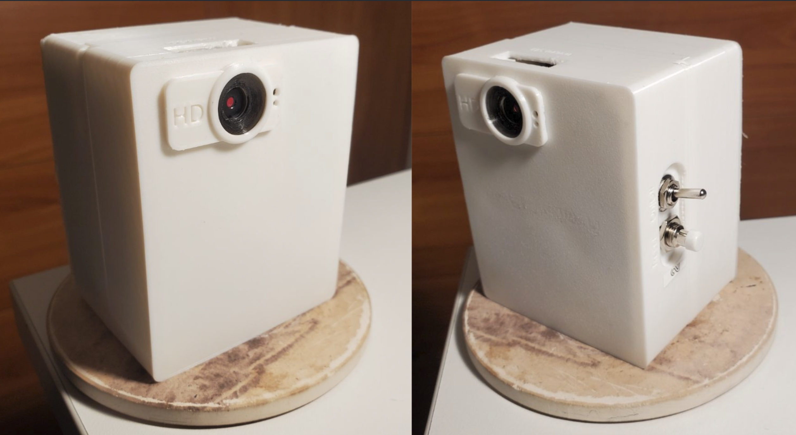

Engineer. Tinkerer. Photographer.
Stanford · Mechanical Engineering & Computer Science
I work across mechanical design, embedded systems, and software, from satellite structures headed to orbit, to low level programming for remotely deployed invasive species monitoring systems.
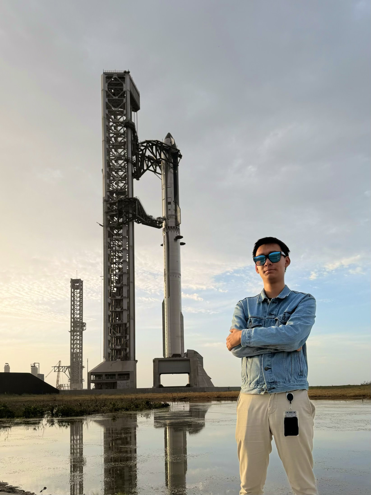
Stanford Student Space Initiative
Leading structures for spacecraft hardware. Continuing work on SAMWISE, a CubeSat targeting launch on a SpaceX Transporter mission from Vandenberg Space Force Base.
Stanford Student Space Initiative
Hands-on aerospace manufacturing, structural design, and test engineering for SAMWISE CubeSat assemblies.
Dept. of Computer Science, Stanford University
Teaching Assistant/Section Leader, helping with Stanford’s Programming Methodology (CS106A) & Programming Abstractions(CS106B) classes.
Dionne Lab, Dept. of Materials Science, Stanford University
Helped to develop nano-scale optical biosensors. Completed a paid summer research internship as part of the MatSci REU program.
Bao Lab, Dept. of Chemical Engineering, Stanford University
Self-healing, pressure-sensing artificial skin for surgical simulation training, mentored by Sam E. Root. Contributed to work published in Device (Cell Press).

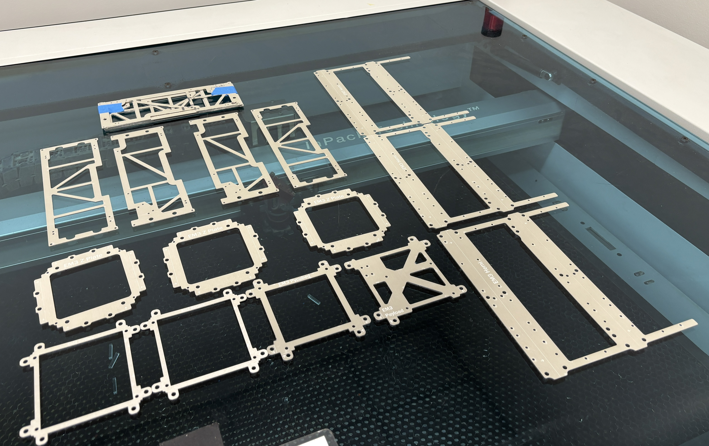
CAD · Aerospace Manufacturing · Test Engineering
SAMWISE is a 2U CubeSat designed from scratch by the Stanford Student Space Initiative (SSI), targeting launch in July 2026 aboard a SpaceX Transporter mission from Vandenberg Space Force Base. I've worked on SAMWISE through many iterations for two years. As satellite structures mechanical team lead, I'm responsible for leading fabrication and integration of the satellite structure, test engineering of components, and collaboration with other teams(i.e. avionics, software, etc.) for launch readiness.
Embedded Systems · CAD · Electrical Engineering
Remotely accessible, Programmable, Arduino-based, Timelapse Camera Stations, with three units having been deployed to monitor invasive plants at a nearby nature preserve. Built on the ESP32-CAM with two startup modes: configuration over a built-in web server (live stream, camera tuning, and capture schedule controls) or autonomous photo capture using saved settings. Between captures, the system enters deep sleep while a DS3231 RTC tracks wake time for low power operation. Images save to a FAT32 microSD card, and the unit runs on dual 18650 batteries for field deployment. Cases are custom 3D printed and designed, and this used self-soldered ciruitry and arduino code.
TreeHacks · NVIDIA Edge AI Track — Winner
Autonomous robotic microfarm: Camera and water line moveson a custom 2-axis gantry. Using the camera soil moisture, pressure, and air-quality sensing; a locally running AI model on a NVIDIA Jetson Nano makes per-plant watering decisions. I led the mechanical engineering, riveting the metal frame, building a functional 2-axis gantry system, 3D printing parts, creating a water line system, all in 24 hours. Project was a winner on the NVIDIA Edge AI Track at TreeHacks 2026, winning an Asus GX10 AI Supercomputer, NVIDIA Jetson Nano, $800 in AI credits, and a visit to NVIDIA's headquarters.
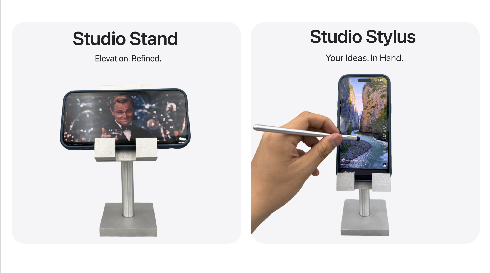
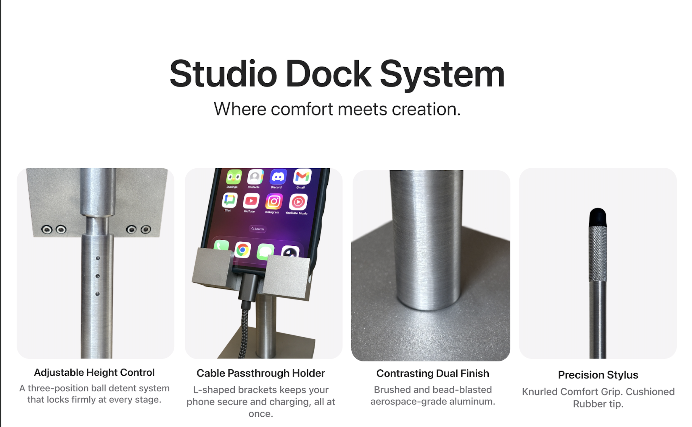
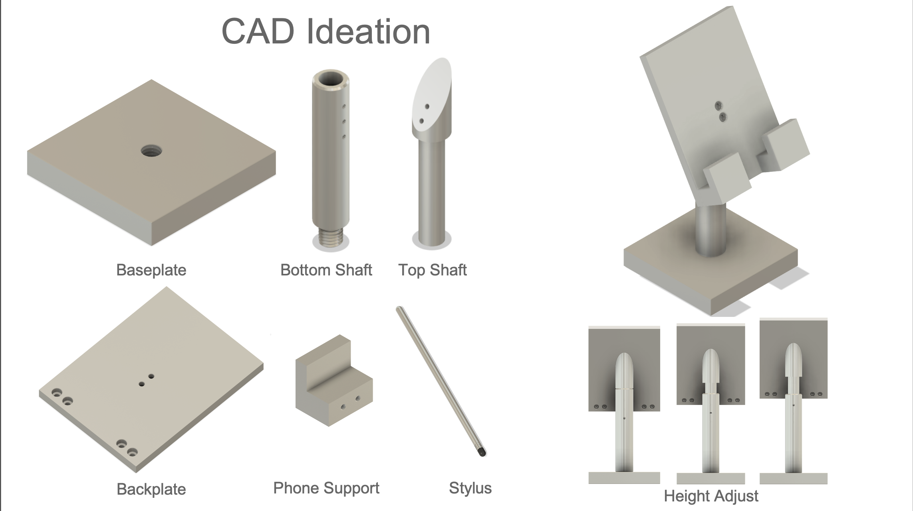
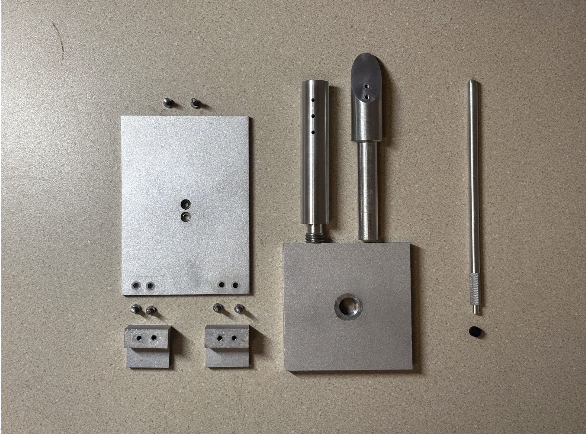
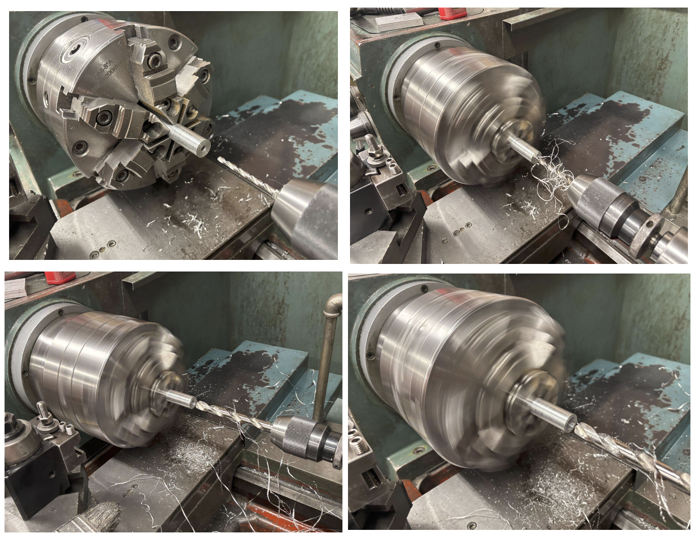
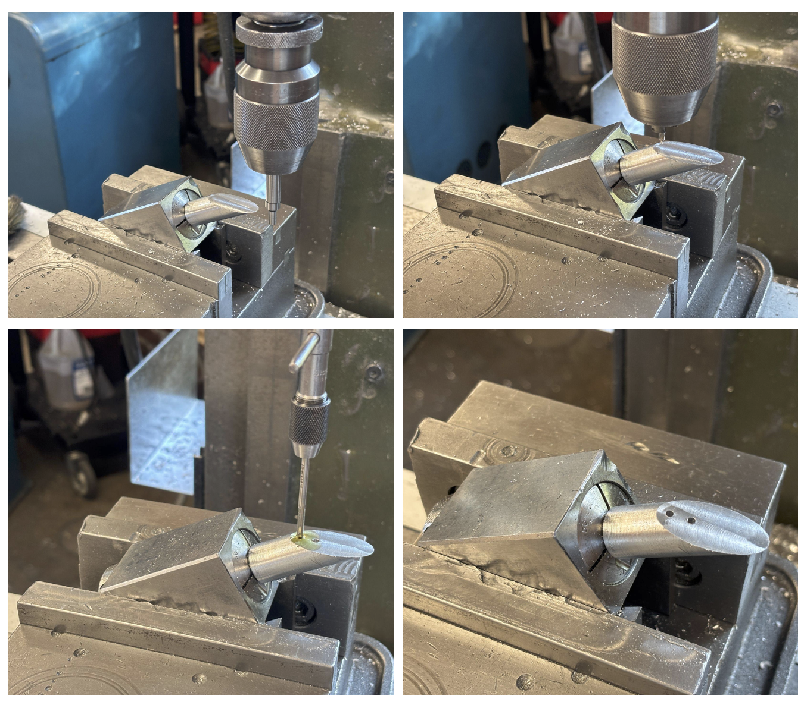
Machining · Lathe · Milling · Bead Blasting
Stand and stylus designed from scratch and fabricated from 6061 T6 Aluminum. The Stand has a ball detent for easy click in-click out three positionheight adjustment. The stylus has a knurled grip and rubber tip. Fabrication includes turning, milling, knurling, external threading, & more. Used drill bits, endmills, angle blocks, mill collet blocks, radius cutter, external threading tool, and more.
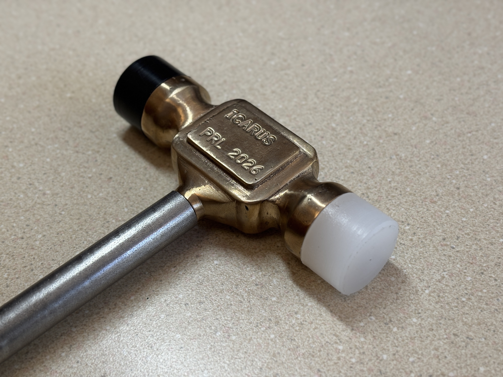


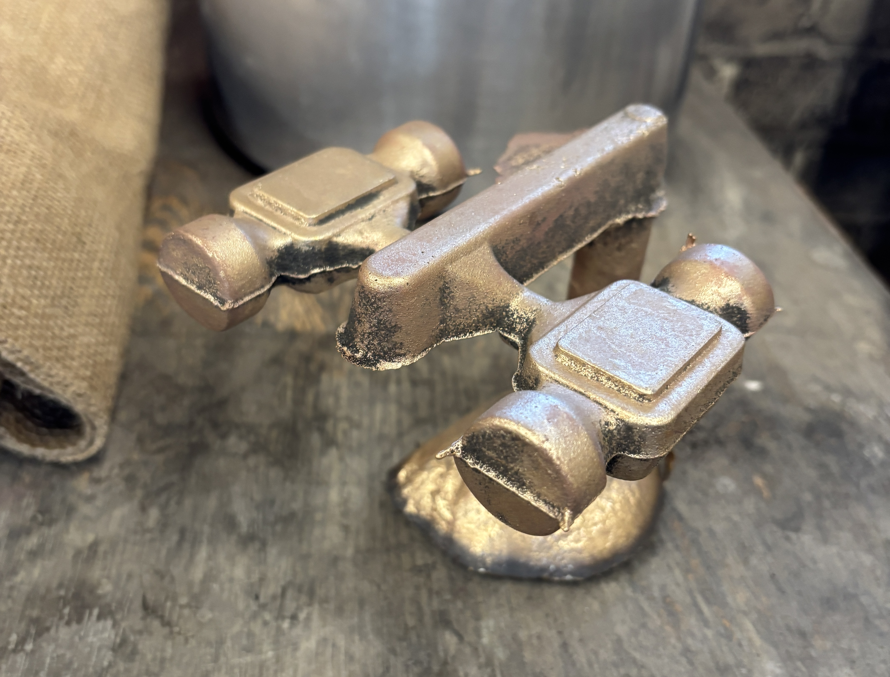

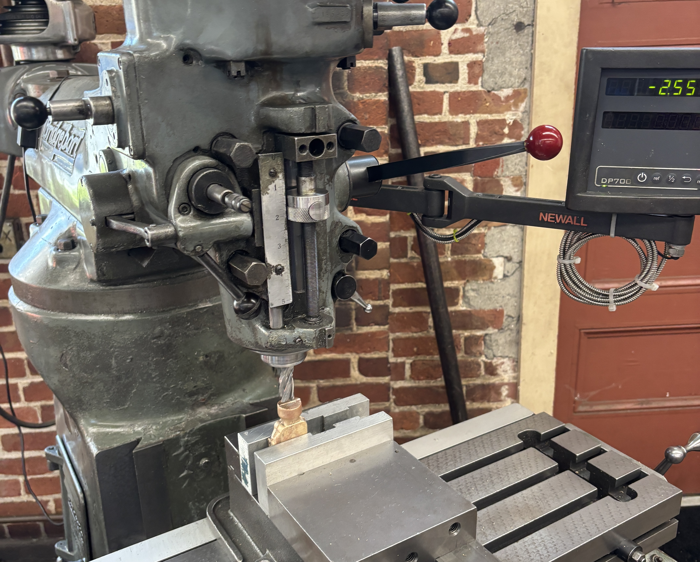
Foundry · Welding · Sand Casting · Lathe · Milling
Hammerhead was sandcasted, then holes & threading for the endcaps and hammer were added on the mill. Hammer endcaps, shaft, and threading were turned and added on the lathe. Everything was finished with sandpaper and polishing. Toolbox is bent front sheet metal, and each side is fastered differently. One is riveted, one uses PEM nuts, one is oxy acetylene welded, and one is spot welded.